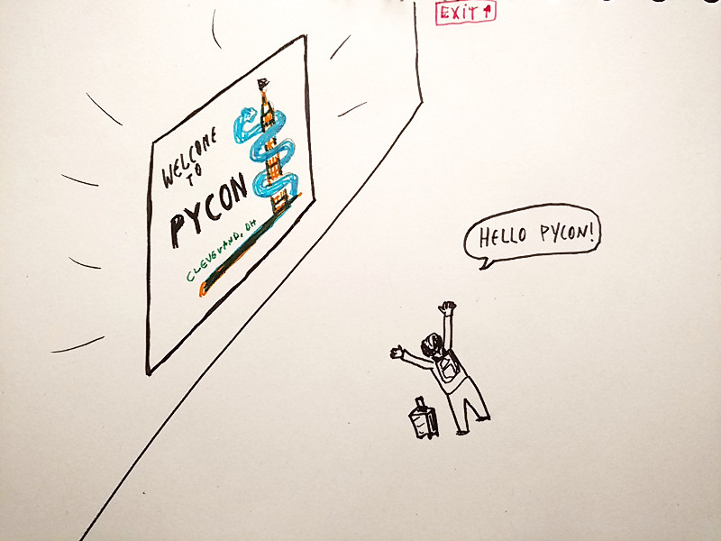
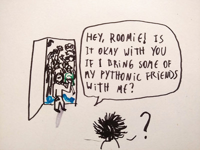
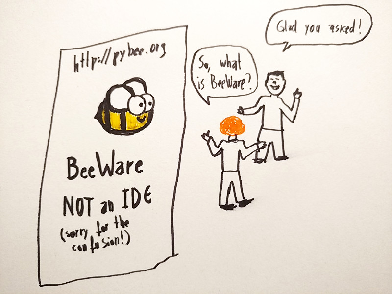
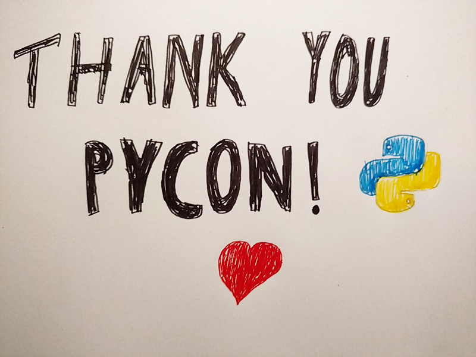

When I arrived at Cleveland's airport a few weeks ago to attend Pycon, the customs agent didn't know that there was a tech conference happening in town. I'm sure many other people knew something was going on, because I was welcomed by a screen just after she checked my documents and let me in. It was a nice gesture, and it surely put a smile on my tired sleepy face!

Pycon is a great conference, because it's really several events at the same time, it goes a lot more than just people presenting talks. In fact I barely watch any talk: since the talks are recorded and are available online very quickly, I prefer to profit of the time there to just talk to people, see old friends, make new ones, talk to my open source buddies and also harass famous cool people asking them to take pictures with me!
It was my third Pycon this year, and I feel already so at home with those folks! Some of my dearest friends are people from the Python community, and I'm grateful to have this opportunity to go see them in the same place every year! Since I live far away from many of them, it is really great to be able to be with them. The only difficult part is to manage splitting my time among them, because I love them all -- and even if I'd love to take them all home with me, I don't think my roommate would accept that.
Pycon is also a special time also because it's when I get to see my cheerful buddies who maintain BeeWare, which have welcomed me to the team about an year ago. This time I got to meet the awesome Dan Yeaw who I only knew from the online chat, and is a super nice person (so nice in fact, that some people say that he is Canadian... jk)! We had a booth in the space dedicated to open source projects, where we had to explain several times that BeeWare is not really about an IDE (anymore). It's always fun being around these folks, preaching the BeeWare word, sharing stories, and I always learn a lot from them.

One of my favorite things at Pycon are the open source sprints, which btw have already been described as a party. This is essentially, a bunch of people excited about open source getting together and doing open source things: writing code, writing docs, trying out stuff, get feedback from users trying out stuff, debug issues, discuss implementation ideas, and more! I always come back full of ideas and positive thoughts from this!
BeeWare sprints are specially cool because it's kind of a big deal when you get your first pull-request merged in a project: basically, you get a coin as acknowledgment for the contribution and everyone applauds! This always feels great, I'm specially excited when people say this is their first open source contribution ever! This year the supply of coins was finished in the second day, I guess we'll have to be better prepared for next year.
Unfortunately this year I could stay only for two days of sprints, because I had another event in NYC (where I also met some more dear friends, btw). Still, I'm happy I could make it for some days, and we got quite a few bugs fixed in VOC during that.
So yeah, Pycon is great, if you're in doubt if you would enjoy, you should just go the next time! You don't even need to like Python that much to get a kick out of it.
Thank you, Pycon, for bringing so much joy and for bringing together so many people that I love. To all the organizers, volunteers and everyone: y'all rock!
Now I'll do my best to keep surviving without seeing y'all until next year!
